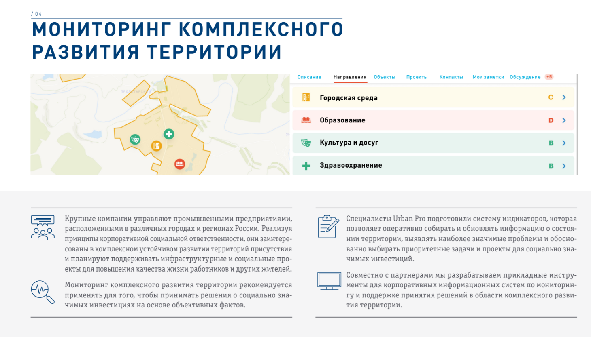

Задача ИС “Развитие территорий” – наглядно и на комплексной основе продемонстрировать проблемные точки, отслеживать изменения, проводимые властями, иметь четкое основание для инициирования наиболее востребованных проектов, собирать их в долгосрочную программу, отслеживать прогресс.
- Крупные компании управляют промышленными предприятиями, расположенными в различных городах и регионах России. Реализуя принципы корпоративной социальной ответственности, они заинтересованы в комплексном устойчивом развитии территорий присутствия и планируют поддерживать инфраструктурные и социальные проекты для повышения качества жизни работников и других жителей.
- Мониторинг комплексного развития территории рекомендуется применять для того, чтобы принимать решения о социально значимых инвестициях на основе объективных фактов.
- Специалисты Urban Pro подготовили систему индикаторов, которая позволяет оперативно собирать и обновлять информацию о состоянии территории, выявлять наиболее значимые проблемы и обоснованно выбирать приоритетные задачи и проекты для социально значимых инвестиций.
- Совместно с партнерами мы разрабатываем прикладные инструменты для корпоративных информационных систем по мониторингу и поддержке принятия решений в области комплексного развития территории.
Кому нужна Информационная система?
| Крупным холдингам со значительным мест присутствия | Муниципалитетам (главам городов и районов) | Государственным органам регионального уровня |
|---|---|---|
| пояснения | пояснения | пояснения |

Примеры внедрения
| ЦЕМРОС | УРАЛ СТАЛЬ | НОРНИКЕЛЬ |
|---|---|---|
| Текст примера | Текст примера | Текст примера |